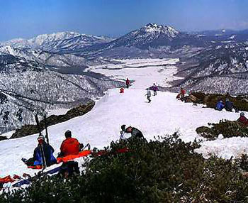
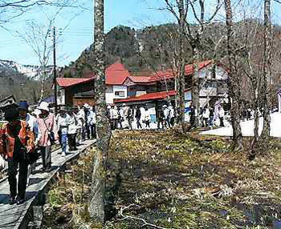
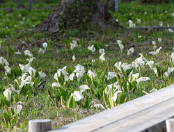
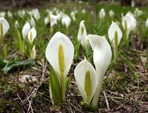

<< back
next>>
2006 *新着情報* -news-
◆
至仏山登山道の残雪期の閉鎖について
残雪期における至仏山登山道は植生保護のために、下記の期間閉鎖されます。
閉鎖期間中は、至仏山への入山はできませんのでご注意ください。
■閉鎖区間：鳩待峠 〜 至仏山頂 〜 山ノ鼻
■閉鎖期間：5月11日 〜 6月30日
���※期間は積雪量などにより変わることがあります。
◆尾瀬情報 (5/5現在)
毎年この時期には、雪の尾瀬ヶ原トレッキングがお楽しみ頂けます。一面を真っ白な雪に囲まれた大自然は大変美しくまさに圧巻です。尾瀬ヶ原の歩きやすい平坦な場所通り、見本園や牛首周辺まで行くことができます。入山にはガイドの同行が必要です。詳細はお問い合わせください。(鳩待峠〜山の鼻まで 行き約1時間半 帰り約2時間)
◆尾瀬情報 (5/4現在)

4/28鳩待峠全面開通により、いよいよ尾瀬のシーズンが始まりました。鳩待峠は尾瀬ヶ原に行く方や、至仏山に登山や春スキーを楽しむ方で賑わいを見せ始めています。至仏山頂上からは、一面真っ白の尾瀬ヶ原・残雪の燧ケ岳などこの時期ならではの絶景が広がります。入山には春登山・春スキーの十分な装備でお出かけください。また入山にはガイドの同行が必要です。詳細はお問い合わせください。
◆水芭蕉の森 (5/3現在)
ミズバショウが見頃を迎えようとしています。
ライトアップされた「水芭蕉の森」は昼間とはまた違う幻想的な風景を楽しもうと、たくさんの方が訪れています。
■見頃予想時期：5月連休中〜
5月中旬
■
ライトアップ：5月6日(土)まで
■アクセス：ノナカより車で約10分
◆大清水の水芭蕉
(5/3現在)

尾瀬の入口「大清水」のミズバ ショウは、駐車場すぐそばの湿原に咲いています。車椅子でも通行可能な木道が完備され、気軽に尾瀬の雰囲気を味わうことができます。
■見頃予想時期：5月連休後半〜5月中旬
■アクセス：ノナカより車で約20分
◆
4/29現在 開花状況
■
水芭蕉の森
5月連休中〜
5月中旬（三分咲き）
ライトアップ
4月28日(金)〜5月6日(土) 日没〜9:00pmまで
ライトアップされた「水芭蕉の森」は昼間とはまた違う
幻想的な風景をお楽しみ頂けます。
■
大清水の水芭蕉
5月連休後半〜5月中旬（一分咲き）
ひっそりと「ミズバショウ」が咲き始めました。
駐車場からすぐ近くにある湿原には、幅の広い木道が完備されて
いますのでどなたでも気軽に間近で観賞できます。
見ごろは、例年より一週間ほど遅れそうです。
■
尾瀬の水芭蕉
5月下旬〜6月中旬
残雪多く、見ごろは例年より一週間ほど遅れそうです。
◆大清水の水芭蕉

尾瀬の入口「大清水」のミズバ ショウは、駐車場すぐそばの大清水湿原に咲きます。車椅子でも通行可能な木道が完備され、気軽にご覧になれます。
■平年見頃予想時期：5月上旬〜5月中旬
■アクセス：ノナカより車で約20分
◆水芭蕉の森

ライトアップされた「水芭蕉の森」は昼間とはまた違う幻想的な風景をお楽しみ頂けます。
■平年見頃予想時期：4月下旬〜5月上旬
■
ライトアップ：4月28日(金)〜5月6日(土)
日没〜9:00pmまで
■アクセス：ノナカより車で約10分
◆
見どころ開花情報
岩鞍高原周辺、春の訪れと共に見頃となる水芭蕉の見頃情報をお知らせします。
■
尾瀬の水芭蕉
平年：5月下旬〜6月中旬
水芭蕉で名高い尾瀬は、雪解けと共に白く可憐な姿を見せます。
■
大清水の水芭蕉
平年：5月上旬〜5月中旬
尾瀬の入口大清水の水芭蕉は、車椅子でも通行可能な木道を通って
ご覧になれます。 アクセス：ノナカより車で約20分
■
水芭蕉の森
平年：4月下旬〜5月上旬
ライトアップ
4月28日(金)〜5月6日(土) 日没〜9:00pmまで
アクセス：ノナカより車で約10分
<< back
next>>